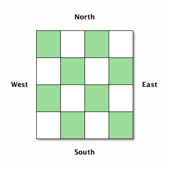
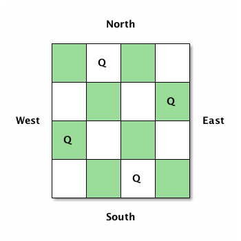

The N Queens Problem
Using Clojure to put \(N\) Queens on an \(N \times N\) chess board without them being able to threaten each other.
I read a blog post by Aphyr about solving the N Queens problem called Typing the technical interview, which made me reminisce about wrestling with this problem at Uni over a decade ago.
In my first year at Uni I was handed a solution, in C, that one of the maths teachers had scribbled on a napkin in the pub. (It was a British university, after all.) It only solved the problem for \(N=8\), and I wanted to generalise it for all \(N\). I remember my pride in achieving this, and in finding a way to make it run faster by adding an early stop condition. I rewrote it several times, in C and C++, to remove the original's use of a global variable and just to try out different approaches.
Later, while still at Uni, I toyed with solving this problem using a genetic algorithm. (I was doing an AI degree, and was learning about GAs.) I managed to get a solution that, after a lot of work, got a solution for low values of \(N\), but the most valuable lesson I learnt was that this problem is a poor fit for a GA (at least such a simple one as my implementation) because of the inherent constraints between all the pieces: every Queen must be unable to capture any other. Also, there is no ranking other than "it is valid" vs "it is not valid", thus a GA can not iterate towards a better solution: it can just randomly mutate things until it chances on a working solution.
Fast forward to present day, 15 years later. I decided to try and solve it in Clojure—my current first language of choice. First, however, I had to make sure I had a suitable algorithm for finding a solution. I tried to work out an algorithm for myself, and to help me "desk check" it I drew a four-by-four Chess board and labelled the directions like below. (One of the beauties of it being an \(N\) Queens problem is you can test with \(N\) smaller than 8. This makes it easier to create tests.)

The algorithm was easy to discover, but I found it very hard to put it into words! Anyway, here is my attempt:
- Start in the west-most column
- Place one Queen in each column until there are \(N\) Queens on the \(N \times N\) board
- For each column, start in the south-most row and move north. Place a Queen in the first row such that it doesn't threaten any of the other Queens already on the board
- If you can't put a Queen anywhere in a column you have to backtrack: go back a column and move the Queen there north to the next row; you may have to repeat this process
- When you've backtracked so many times that you are about to fall of the north end of the west-most column you're done
Following the algorithm you might end up with something like this:

Now I was ready to start thinking about how to solve this problem in Clojure. First I thought about how to represent my board. The "obvious" choice would have been a two-dimensional vector, but realising that the algorithm constrains us to only ever put one queen in each row/column we can compress the board to a simple vector. The indexes of the vector are its column locations, and each value is an integer indicating the row index a queen is placed in that column. The next figure shows how this vector would represent the solution in the previous figure. Both rows and column indexes start counting from zero.

When experimenting with the algorithm I realised that we don't need to check if every Queen can capture any others all the time: since the queens capture in all eight directions it's enough to check if the queen we're about to place can capture any of the others. Further, it's clear from the algorithm that we never need to check directly north or south, because we only put one queen in each column. And we never need to check east of us, because we know that part of the board is still empty. This leaves checking three directions: directly west, southwest, and northwest. Now we're ready to dive into Clojure.
Let's check if directly west is safe first. This is easy: just check that any of the existing vector locations does not contain our row index. Job done!
(defn- safe-west? [board row] (not-any? #{row} board))
Let's check southwest next. This is a bit more complex. We need to decrement our row index and column index and check if the row number at that column matches the calculated row value. At any point, if the row or column becomes less than zero we've reached the end of the board and this is a "safe" location: no capture is possible in this direction.
(defn- safe-southwest? [board row] (loop [col (dec (count board)) row (dec row)] (if (or (> 0 col) (> 0 row)) true (if (= (nth board col) row) false (recur (dec col) (dec row))))))
Checking the northwest direction is similar to southwest, with the difference that we have increment the row indexes. Thus we also need the size of the board passed in, because we need to know the max index value our rows can have.
(defn- safe-northwest? [board row size] (loop [col (dec (count board)) row (inc row)] (if (or (> 0 col) (>= row size)) true (if (= (nth board col) row) false (recur (dec col) (inc row))))))
For convenience I packaged all the three previous directions into a
single method, and-ing them all together:
(defn- safe? "Check if the proposed position is a safe one to put a Queen such that it cannot capture any of the existing queens on the board." [board row size] (and (safe-west? board row) (safe-southwest? board row) (safe-northwest? board row size)))
We're now ready to write a function generate all the solutions for a board of size \(N\):
(defn queens "Finds all solutions to the N Queens problem for a given board size." [size] (loop [board [] row 0 acc []] (if (= size row) (if (empty? board) acc (recur (pop board) (inc (last board)) acc)) (if (= size (count board)) (recur (pop board) (inc (last board)) (conj acc board)) (if (safe? board row size) (recur (conj board row) 0 acc) (recur board (inc row) acc))))))
It took me a while longer to solve this than I am happy with, but I am happy with the final solution. Clojure, an immutable lisp, fits the recursion-based solution well.